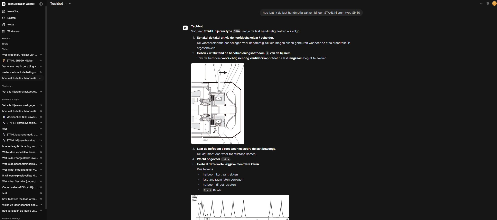
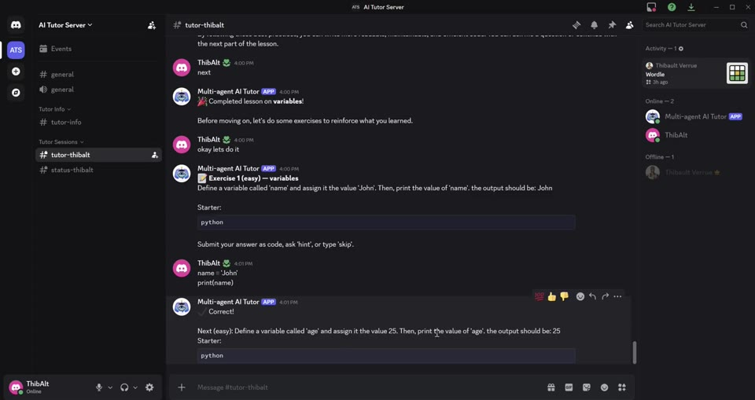
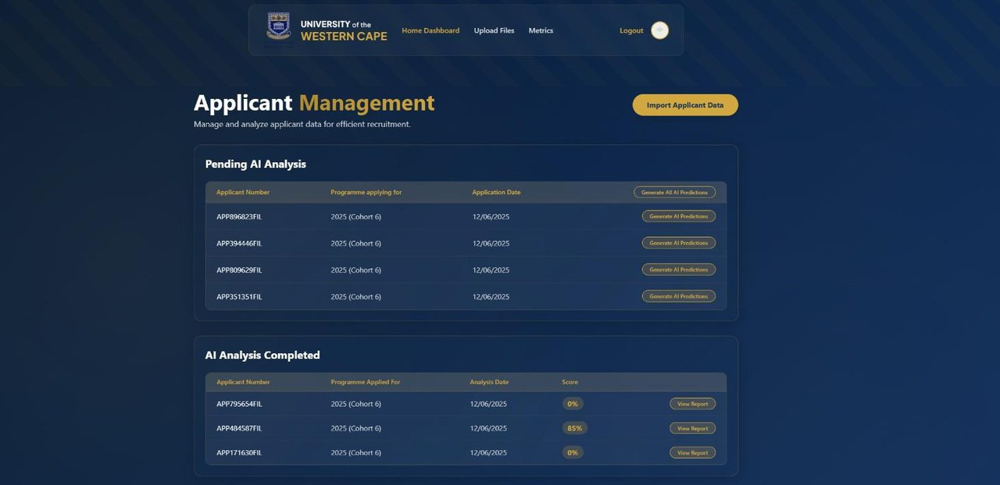
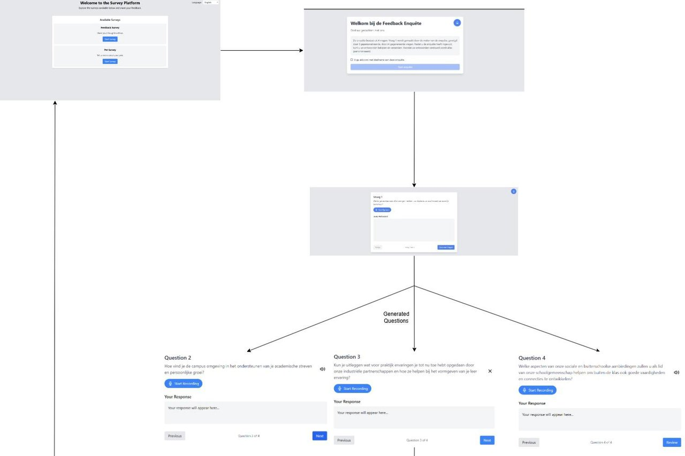
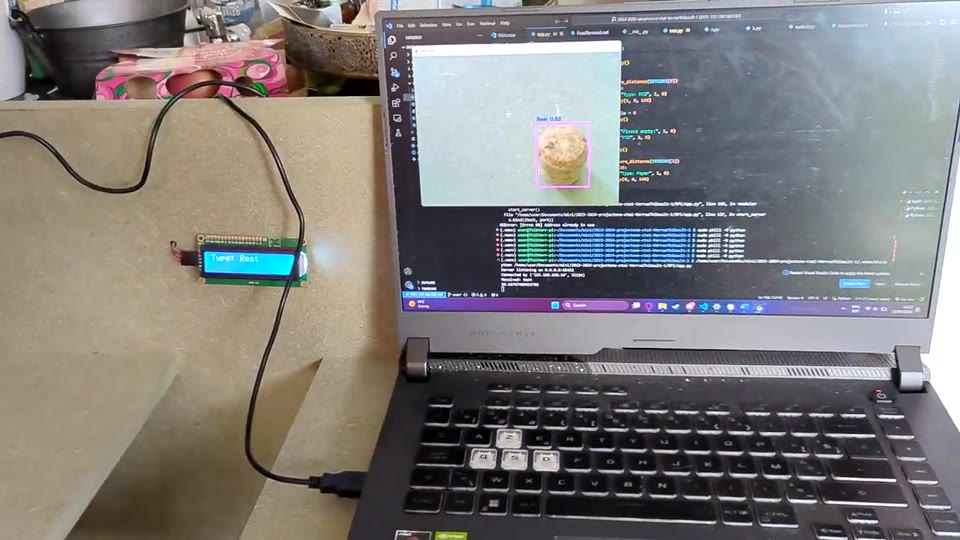

ProjectenProjects
Dingen die ik gebouwd, getraind, gesnoeid, gedeployed of stukgemaakt en weer gefikst heb. Van embedded vision tot multi-agent LLM-systemen.Things I've built, trained, pruned, deployed or broken and fixed again. From embedded vision to multi-agent LLM systems.

llm_system 0.98Technician RAG Assistant
Zelf-gehoste RAG-chatbot ("Techbot") voor kraan- en hijstechnici bij Cluma Rolbruggen. Maatwerk multimodale PDF-ingestie, agentische retrieval met query-rewriting en bounded retry, geciteerde antwoorden met inline diagrammen. Draait in productie.Self-hosted RAG chatbot ("Techbot") for crane and hoist technicians at Cluma Rolbruggen. Custom multimodal PDF ingestion, agentic retrieval with query rewriting and bounded retry, cited answers with inline diagrams. Running in production.

multi_agent 0.95Multi-Agent Python Tutor
Curriculum-bewust AI-tutorsysteem uitgerold als Discord-bot. Multi-agent orchestratie levert gestructureerde Python-lessen, genereert oefeningen, evalueert code en past zich aan de voortgang van de leerling aan.Curriculum-aware AI tutoring system deployed as a Discord bot. Multi-agent orchestration delivers structured Python lessons, generates exercises, evaluates code and adapts to learner progress.

rag_analytics 0.96UWC Recruitment Analytics
AI-recruitment-analyseplatform voor de UWC Future-Innovation Lab: JSON-ingestie, applicant-scoring via DeepSeek-R1 met RAG, en cohort-dashboards. C#/.NET-backend, Cosmos DB, Ollama lokaal — bewust geen cloud-LLM omdat sollicitantendata het lab niet mag verlaten.AI recruitment analytics platform for the UWC Future-Innovation Lab: JSON ingestion, applicant scoring via DeepSeek-R1 with RAG, and cohort dashboards. C#/.NET backend, Cosmos DB, Ollama running locally — deliberately no cloud LLM because applicant data can't leave the lab.

voice_survey 0.94Participation Via Audio
Spraakgestuurde survey-webapp voor jongeren: Whisper voor real-time transcriptie, Llama 3.1 voor contextuele follow-up-vragen, SpaCy-anonimisatie voor de opslag. Team van 3, end-term project bij Howest.Voice-driven survey web app for young people: Whisper for real-time transcription, Llama 3.1 for context-aware follow-up questions, SpaCy anonymisation before storage. Team of 3, end-term project at Howest.

cv_iot 0.93Auto RecyclerAuto Recycler
Automatische recyclagebak: YOLOv8 op laptop herkent PMD, papier of restafval en stuurt de klasse naar een Raspberry Pi die de juiste deksel opent — maar alleen als de ultrasoonsensor bevestigt dat de bak nog ruimte heeft.Automatic recycling bin: YOLOv8 on a laptop identifies PMD, paper or residual waste and forwards the class to a Raspberry Pi that opens the right lid — but only if the ultrasonic sensor confirms the bin has room.